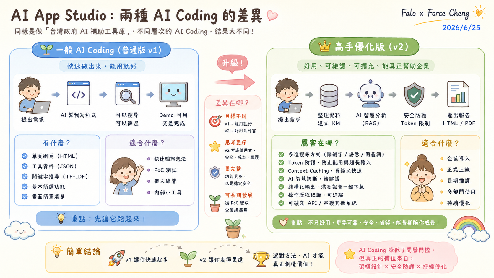
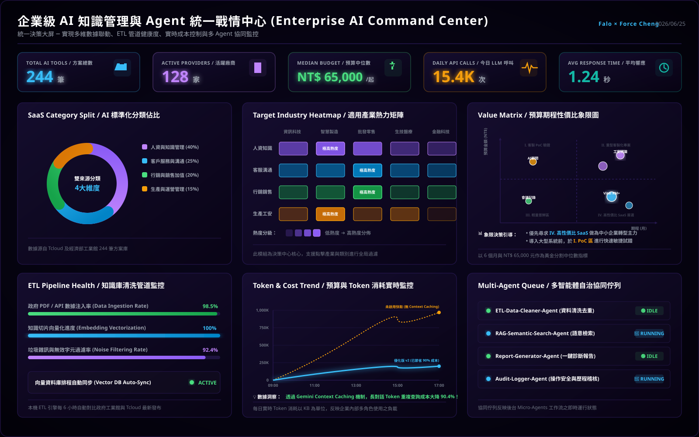

AI KM 建置範例：台灣政府 AI 補助工具採集與 RAG 智慧檢索系統 (tw-ai-grant-intro.md)
本頁面為 Class 04 專屬設計之「AI 知識庫 (KM) 實戰建置範例」之技術導覽手冊。本專案並非直接套用外部的公務實用工具，而是專為本課程重構與優化之企業級 PoC 示範。
本專案使用政府多管道補助資訊碎片化的真實商業痛點作為載體，向同仁展示並傳遞在開發企業級 AI App 時最關鍵的五個進階軟體工程觀念。
---
🎯 專案重構定位與教學目的
學員應透過本專案跳脫「聊天機器人 (Chatbot) 即 AI 應用」的狹隘認知，深刻理解如何將逆向資料採集、輕量前端 TF-IDF、Token payload 防護、以及 Context Caching（上下文快取）減費技術融入正式的軟體開發管線中，打造符合銀河 ERP 下一代 AI 生態圈架構的產品。
📊 AI KM RAG 系統整體架構圖

📈 AI KM RAG 系統數據管線與流程圖

---
💡 專案蘊含的五大核心軟體工程觀念
1. 工程務實主義 (Engineering Pragmatism) ─ 擺脫向量資料庫的迷思
- 教學觀念：對於 200~300 筆這種中小規模的企業內部專屬知識集，純前端字元級 TF-IDF 檢索引擎（如 MiniSearch）是更務實、成本為零且秒級響應的解法。應根據資料規模與場景選擇最適技術，而非盲目堆疊昂貴且複雜的雲端向量資料庫（Vector DB）基礎設施。
2. 物理與安全防禦 (Input Sanitization & Payload Defense) ─ AI 安全意識
- 教學觀念：在企業生產環境中，必須建立 API Gatekeeper（閘道防護） 的防禦意識。本專案展示了前端如何在請求送往雲端大模型前，嚴格限制 Payload 上限為 4,096 tokens。此物理邊界防禦不僅徹底杜絕超長文本导致的 API 刷爆財務風險，還有效攔截了惡意提示詞注入（Prompt Injection）。
3. 企業落地經濟學 (AI Economics) ─ 以 Context Caching 實現可控成本
- 教學觀念：當每次 RAG 對話都需要將整份知識庫丟給 LLM 時，Token 費用將成線性暴漲，企業難以承受。本專案引入 Gemini API 的 Context Caching（上下文快取） 技術。當整份工具庫被快取在雲端時，後續的多次對話診斷只需支付極低的快取讀取費用（降低 90% 成本），是企業 AI 應用規模落地的關鍵。
4. 從「對話」到「結構化價值交付」 (Structured Value Delivery)
- 教學觀念：企業需要的不是陪使用者聊天的 Chatbot，而是「能直接交付的商務文件」。本專案展示了如何將 AI 的多維度診斷結論，在前端直接渲染成排版精美、無廣告干擾的 Notion 風格 HTML 轉型建議書，一鍵即可列印或存為 PDF，實現「對話即交付」的高商務價值。
5. 零運維極致部署 (Zero-Runtime Cost & Serverless)
- 教學觀念：本專案重構成 100% 自包含的單頁應用 (Single Page App)，將 224 筆政府補助案黃金資料庫與檢索引擎、UI 邏輯完全封裝於單一 HTML 檔案中。無任何 CORS 跨域限制，可完全離線運行或透過本地 `file://` 直接開啟，展示了如何設計「零伺服器成本、零維運死角」的極致高可用 AI App。
---
🖥️ 未來演進方向：企業級 AI 統一戰情中心 (Command Center) 藍圖
在銀河 ERP 下一代 AI 生態圈架構中，知識管理與 RAG 不僅僅是檢索工具，更將演進為企業營運的「實時指揮中樞」。我們為本專案規劃了代表未來升級方向的「企業級 AI 統一戰情中心 (War Room)」大屏藍圖。這套設計對應了知識庫的 Load (L) 階段，結合商業數據決策與底層工程維運，實現實時、可控且高質感的系統監控：

該戰情中心包含了七大核心工程與商業指標元件，旨在解決企業在導入 AI 知識庫時的維運痛點：
1. 大盤核心 KPI 面板 (方案總數、活躍廠商、預算中位數、今日呼叫次數與響應延遲)。
2. AI 標準化分類佔比圓環圖 (視覺化洞察政府補助案在各大 SaaS 分類的結構佔比)。
3. 適用產業熱力矩陣 (標註製造、資訊、零售等產業的熱度，支援雙向數據聯動過濾)。
4. 預算期程性價比象限圖 (以 6 個月與 6.5 萬元為中位數十字分界，智慧篩選高性價比 SaaS)。
5. ETL Pipeline 管道監控 (實時監控數據注入率 98.5%、向量化進度 100% 與雜訊過濾率 92.4%)。
6. Token 與成本實時走勢圖 (直觀對比「啟用快取」與「未啟用快取」的 API 花費，突顯 Context Caching 快取大省 90% 成本的威力)。
7. 多智能體自治協同佇列 (展現負責資料清洗的 ETL-Agent、語意檢索的 RAG-Agent、報告產生的 Report-Agent 等後台非同步工作佇列狀態)。
---
🚀 實戰系統體驗與教材入口
本專案提供兩個不同重構階段的系統版本，以及一份完整的網頁逆向與前端 RAG 設計技術講義：
1. v2.10 進階版 (RAG 降噪與 Token 防禦控制台)：tw-ai-grant-v2.html - 整合 Gemini 1.5 Flash 進行語意診斷，內置 Token 防禦機制、Context Caching 優化與 Notion 風格建议書產出。
2. v1.01 首發版 (雙層智慧過濾與地端秒檢)：tw-ai-grant-v1.html - 展示純前端字元級 TF-IDF 全文檢索與多維度複合式篩選（適用對象、補助類別、地區）。
3. 網頁逆向與本機 RAG 實戰講義：tw-ai-grant-lesson.html - 鄭穎臨老師專屬技術講義，詳解 Chrome DevTools 網路封包獲取 Sheet API 的逆向管線，以及 MiniSearch 與防禦模組的實作細節。